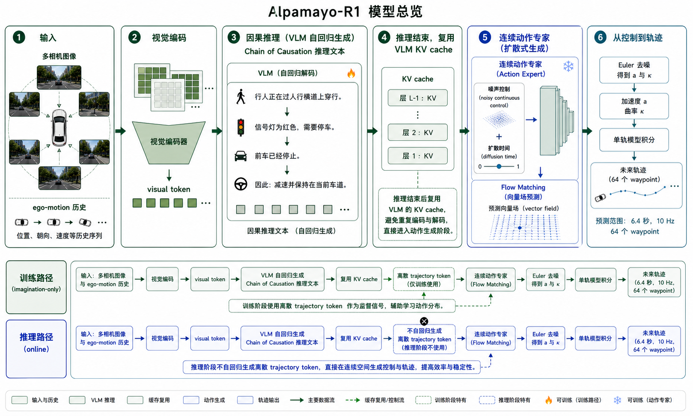
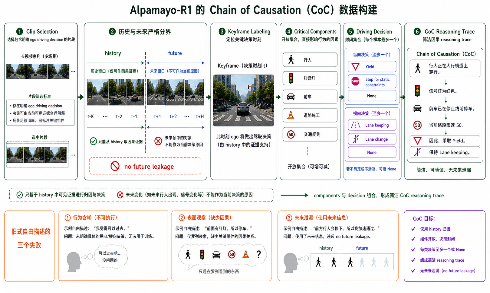
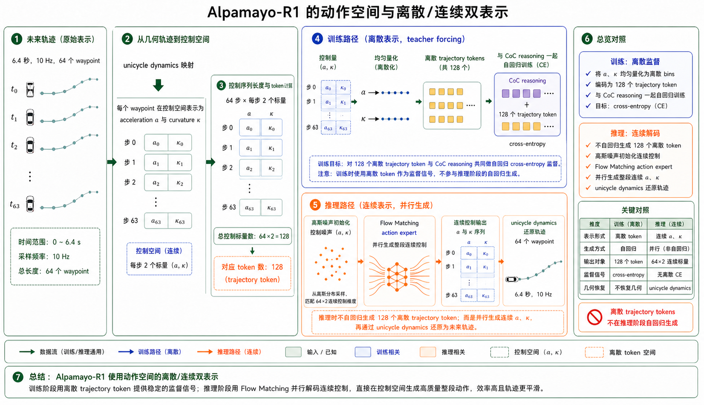
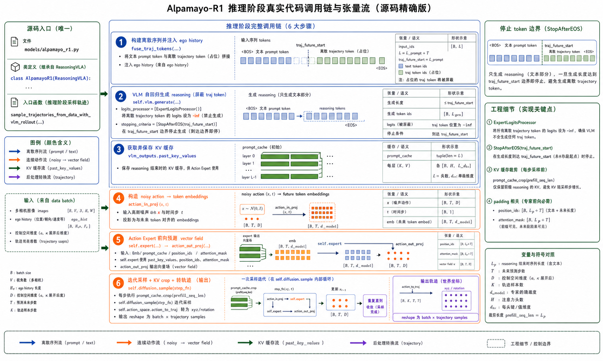
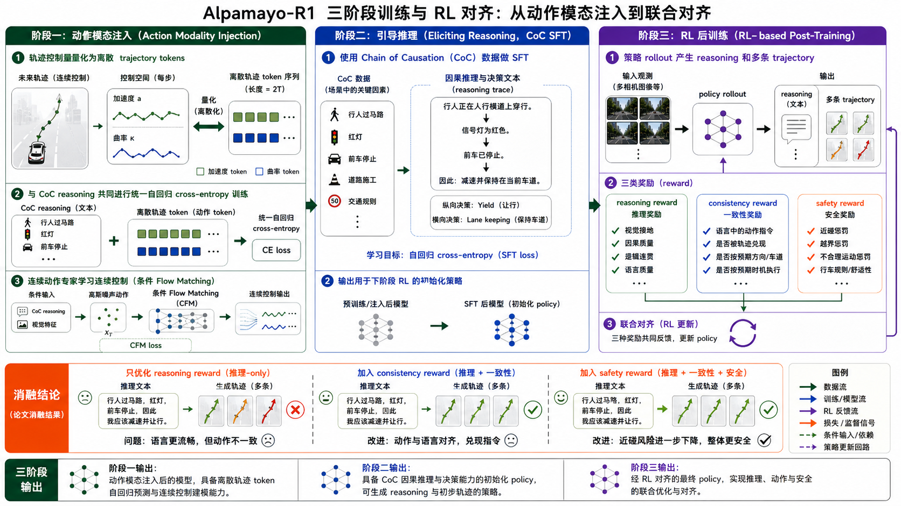
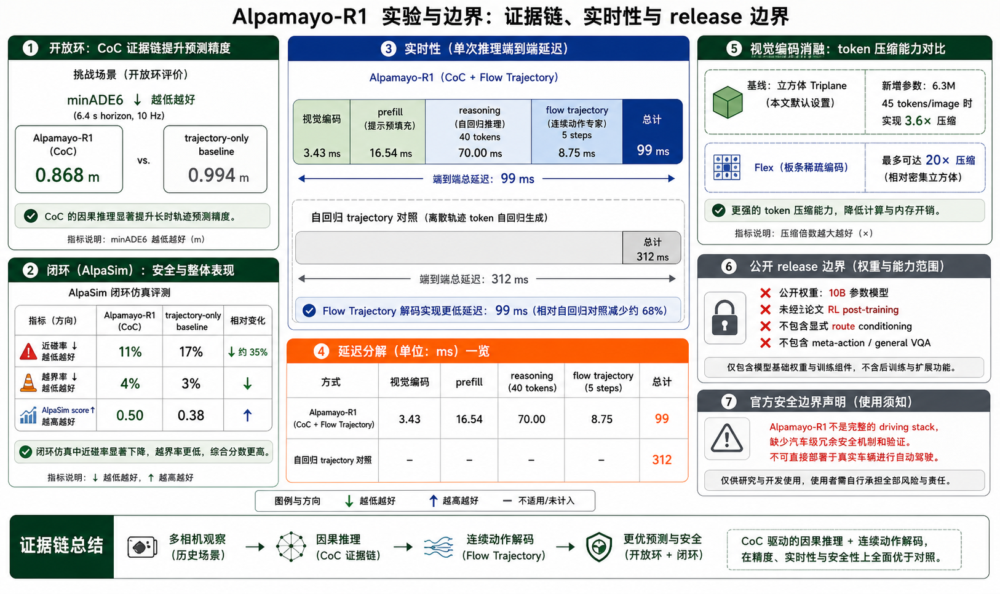

1. 一页读懂：论文真正解决什么
传统端到端驾驶主要学习“看到这个画面，就模仿专家轨迹”。数据充足的常见场景中，这种映射非常有效；但遇到稀疏长尾事件，例如施工区临时借道、无保护左转、遮挡行人、紧急车辆或多车博弈，模型需要识别哪些对象真正决定行为，并把理由落实到速度与转向变化上。
创新一：Chain of Causation
不是自由散文式 CoT，而是先锁定驾驶决策，再从历史窗口选择直接导致该决策的关键因素，最后组成简洁因果说明。
创新二：动作双表示
训练时用离散轨迹 token 把语言和动作放进统一自回归序列；推理时改用连续 flow matching action expert，兼顾可训练性与实时性。
创新三：三奖励对齐
reasoning quality、reasoning–action consistency、safety 三类反馈共同约束，避免模型只追求“解释像专家”却输出冲突轨迹。

2. 任务定义与统一序列
2.1 输入与输出
给定时刻 T 之前的多相机、多时间步图像与 ego-motion history，模型生成推理文本 r，并预测未来轨迹 τ。论文把训练序列写成 [image observation, egomotion, reasoning, trajectory]。这意味着后项条件于前项：轨迹不仅看场景，也看模型已经生成的推理；因此推理不再只是事后解释。
未来视野为 6.4 秒，采样频率 10 Hz，因此共有 64 个 waypoint。每个 waypoint 在当前 ego frame 中包含平面位置与 yaw。代码加载器也把世界坐标轨迹相对 t0 位姿变换到本车坐标系，避免模型把地图全局坐标当成可迁移规律。
2.2 为什么还要 ego-motion history
单张画面不能可靠区分“静止等待”和“正在减速”，也难判断前车相对速度。历史位姿提供速度、加速度、曲率趋势的隐式证据。发布代码中的 tokenize_history_trajectory 把历史轨迹交给 trajectory tokenizer，随后 TrajectoryFusionMixin 用这些 token 替换序列中的历史轨迹占位符。直观说，视觉告诉模型“外面有什么”，ego-motion 告诉模型“自己刚才怎样运动”。
3. CoC 数据：从描述场景到解释决策
3.1 现有驾驶 CoT 的三种失败
行为含糊
“小心前方车辆”没有明确纵向是跟车、让行还是停车，横向是保持车道还是变道，因此无法和低层轨迹建立单义映射。
理由表面化
“天气晴朗、道路宽阔”可能是真实描述，却未必决定当前减速行为。大量无关文本会稀释真正的 causal factor。
未来泄漏
标注者看完整视频后，可能把关键时刻之后才出现的行人或车辆写进理由；训练模型当时根本看不到这些证据，形成 causal confusion。
3.2 结构化标注协议
CoC 把样本拆为三个组件：driving decision、critical components、composed reasoning trace。驾驶决策使用封闭集合，并允许最多一个纵向决策与一个横向决策；关键因素保持开放集合，使标注者能够写对象、交通规则、道路几何和交互关系。关键点是：决策词汇被标准化，但原因表达仍保留开放性。

3.3 一个具体例子
设 ego 接近斑马线，右侧停靠车辆遮挡视野，行人刚从车头前露出。合理的纵向决策是 Yield，横向决策是 Lane keeping。CoC 可以写成：“右侧停靠车辆造成遮挡，一名行人进入斑马线，因此减速让行并保持当前车道。”这里“遮挡”和“行人”是可见历史中的 critical components；“减速让行、保持车道”能分别映射到 acceleration 下降和 curvature 接近车道中心轨迹。若文本写“行人已经穿过道路，所以重新加速”，但该事件发生在未来帧，就属于论文专门排除的未来泄漏。
4. 视觉编码：实时性首先是 token 预算问题
4.1 默认单图 tokenizer
论文默认使用 VLM 自带视觉编码器。图像先按 14 像素 patch 编码，再做 2× 双线性下采样，相当于最终每 28×28 像素形成一个 token。448×280 输入得到 16×10 = 160 tokens/图。如果车辆有 7 个相机、多个历史帧，token 数会线性爆炸，Transformer prefilling 成本随之上涨。
4.2 Triplane 与 Flex
Triplane 把多相机信息先投影到固定 xy/xz/yz 三平面，再 patchify；因此输出 token 数主要由平面大小决定，不再直接随相机数和分辨率增长。论文示例 Sx=Sy=96、Sz=48、patch=8 时，每个时间步合计 288 tokens；7 相机折算约 41.1 tokens/图，较 160 tokens 下降约 3.9 倍。Flex 进一步对多相机、多时间序列共同压缩，适合长历史。
| 编码器 | 新增参数 | tokens/图 | 相对 minADE₆ | 理解 |
|---|---|---|---|---|
| Baseline | 0 | 160 | 0% | 默认稳健方案 |
| Triplane | 6.3M | 45（3.6× 压缩） | +4% | 极大降 token，小幅质量代价 |
| Flex | 61.6M | 8（20× 压缩） | -2% | 长时多相机更有价值 |
这里的相对 minADE 为论文表格定义，负值代表比 baseline 更低。不能简单得出“Flex 永远最好”：它增加 61.6M 参数，且最佳选择依赖相机数、历史长度、分辨率和硬件吞吐。
5. 为什么不直接预测 x、y waypoint
论文报告直接在位置空间学习容易受定位和传感器高频噪声影响，且车辆控制器最终仍要平滑轨迹。Alpamayo-R1 因而把未来轨迹转换为 unicycle control：每个时间步预测 acceleration aᵢ 与 curvature κᵢ，再利用动力学积分还原 x、y、yaw、velocity。
θᵢ₊₁ = θᵢ + ΔT·κᵢvᵢ + (ΔT²/2)·κᵢaᵢ
ΔT = 0.1 s
x、y 更新使用相邻速度与朝向的梯形积分，而不是最粗糙的单点 Euler。训练标签从 waypoint 通过带 Tikhonov regularization 的最小二乘反求控制序列，正则项抑制高频抖动。发布代码的 UnicycleAccelerationCurvature 与相关 utils 负责 trajectory ↔ action 的互转。一个具体例子：若 0.1 秒内 a=-2 m/s²，当前速度 10 m/s，则下一步约 9.8 m/s；若 κ 保持很小，车辆基本直行减速。相比直接让模型拟合带噪 x、y，这个表示更贴近可执行控制。
6. 双表示：训练离散，推理连续
6.1 离散 token 为什么有用
每条轨迹有 64 步，每步两个控制量，因此训练序列包含 128 个离散 trajectory tokens。连续 acceleration/curvature 在预定义范围内均匀量化成 bin，再映射为特殊词表 token。于是标准 cross-entropy 就能同时监督 reasoning token 与 action token，SFT 和基于 token log-probability 的 RL 也能统一处理。
6.2 为什么推理时不用 128 个 token
自回归逐 token 解码慢，而且量化后的控制可能不够平滑。论文使用更小的 Transformer action expert，通过 flow matching 一次并行处理整段连续控制序列。推理首先让 VLM 生成 reasoning，遇到 <traj_future_start> 后停止；保留 VLM 的 KV cache，随后 action expert 在该上下文条件下把高斯噪声逐步变成连续控制。

训练路径
trajectory → (a, κ) → 量化 token → 与 reasoning 一起做 CE；action expert 另用 conditional flow matching loss 学连续向量场。论文明确对 VLM 产生的 KV cache 使用 stop-gradient，避免 expert loss 反传污染语言主干。
推理路径
生成 reasoning → 缓存上下文 → 从高斯噪声初始化 64×2 控制 → 多步 Euler integration → unicycle dynamics 还原 waypoint。发布代码支持一次采样多条 trajectory，保留多模态可能性。
7. Flow Matching Action Expert 逐步拆解
7.1 训练目标
真实控制序列记为 u，噪声 ε~N(0,I)。在时间 t 构造插值 uₜ = t·u + (1-t)·ε，最优传输路径的目标向量场是 u-ε。网络看到 noisy controls、diffusion time，以及由 observation 和 reasoning 形成的 KV cache，预测“当前点应该朝哪个方向移动”。
uₜ₊δ = uₜ + δ · v_Θ(uₜ, observation, reasoning)
论文默认推理 δ=0.1；runtime 表则报告 5-step trajectory decoding，说明实际 benchmark 配置可使用更粗的有限步采样。应把“论文公式默认设置”和“特定运行时配置”区分开，不应机械认定所有 release 调用都固定十步。
7.2 发布代码中的真实调用链
AlpamayoR1.sample_trajectories_from_data_with_vlm_rollout ├─ fuse_traj_tokens(...) # 注入 ego history token ├─ self.vlm.generate(...) # 生成 CoC reasoning │ ├─ ExpertLogitsProcessor # 屏蔽离散轨迹词表 │ └─ StopAfterEOS(traj_future_start) # 到动作起点停止 ├─ prompt_cache = past_key_values ├─ action_in_proj(noisy_action, t) ├─ self.expert(..., past_key_values=prompt_cache) ├─ action_out_proj(last_hidden) ├─ self.diffusion.sample(step_fn) └─ action_space.action_to_traj(...)
对应：src/alpamayo_r1/models/alpamayo_r1.py:124 起；核心 generation 在 167–210 行，expert step_fn 在 256–286 行，diffusion 与 action_to_traj 在 288–310 行。

7.3 一个去噪直觉例子
初始 64×2 控制完全是噪声，某些步可能意味着突然满刹、下一步急加速。action expert 读取 reasoning“前方红灯，平稳减速并停车”，向量场会把前半段 acceleration 拉向温和负值，把接近停止线后的 acceleration 拉向零，同时保持 curvature 与车道几何一致。每一步更新都对整条序列并行进行，因此速度远快于逐个生成 128 个动作 token。
8. 三阶段训练：先会开，再会解释，最后让两者一致
总体驾驶数据
模仿因果推理
多候选推理与轨迹
8.1 SFT 目标
CoC SFT 最大化 P(reasoning, control | observation)，实践中对 reasoning token 和 128 个离散 trajectory tokens 同时做交叉熵。它能建立基本推理模板，但不能保证文字视觉接地，也不能显式保证动作忠于文字。
8.2 为什么 SFT 不够
自动标注可能含噪；模型可能记住常见句式；next-token loss 对“画面里是否真的有该行人”没有硬约束；联合 CE 也可能产生“文本说保持车道，轨迹却横向漂移”的冲突。因此论文把 SFT 看作 scaffold，而不是最终对齐。
9. RL 对齐：防止“解释很好，驾驶很差”

9.1 三类奖励分别做什么
Reasoning reward
大 reasoning critic 对事实正确、视觉接地、因果相关、清晰完整进行评分。它提升可解释性，但单独使用会鼓励模型优化“被评分者喜欢的文本”。
Consistency reward
评估 reasoning 中的 meta-action 是否与 trajectory 行为匹配，例如文字说 follow lead vehicle，轨迹就不应变道超车。
Safety reward
通过闭环或几何信号惩罚 close encounter、越界和不合理运动，把“动作一致”进一步约束为“动作安全”。
9.2 最关键消融
| 策略 | ADE ↓ | Reasoning ↑ | 一致性 ↑ | 近碰率 ↓ |
|---|---|---|---|---|
| SFT | 2.12 m | 3.1 | 0.62 | 6.9% |
| + reasoning reward | 2.19 m | 4.5 | 0.53 | 5.8% |
| + reasoning + consistency | 1.92 m | 4.5 | 0.85 | 6.2% |
| + reasoning + consistency + safety | 1.94 m | 4.4 | 0.83 | 3.7% |
这是全篇最有解释力的结果：只加 reasoning reward，语言评分从 3.1 升到 4.5，但 ADE 从 2.12 恶化到 2.19，一致性从 0.62 降到 0.53。也就是说，更漂亮的推理文本反而更不忠于动作。加入 consistency 后，ADE 降至 1.92，一致性升至 0.85；再加入 safety，近碰率降至 3.7%。论文声称的 45% reasoning 改善与 37% 一致性改善，来自 3.1→4.5 和 0.62→0.85。
10. 实验结果如何正确解读
10.1 推理是否改善策略
在挑战场景开放环测试中，CoC 模型 minADE₆ 为 0.868 m，trajectory-only baseline 为 0.994 m，改善约 12%。闭环 AlpaSim 中，近碰率从 17% 降到 11%，即相对减少约 35%；off-road 为 4% 对 3%，并非所有指标都提升；综合 AlpaSim score 从 0.38 升到 0.50。正确结论是推理显著改善交互安全，但没有证明所有闭环失败都被解决。
10.2 连续 action expert 是否值得
| 解码 | minADE@6.4s ↓ | AlpaSim at-fault ↑ | Comfort ↑ | 相对速度 |
|---|---|---|---|---|
| Autoregressive | 0.6811 | 0.59 ± 0.17 | 44.05% | 1.00× |
| Flow Matching | 0.6440 | 1.27 ± 0.34 | 97.38% | 1.16× |
连续专家不仅更快，还改善舒适度与闭环得分，支持控制空间与并行解码的设计。这里“1.16×”是该消融中的相对 decode speed，不等同于 runtime 表中 222 ms/8.75 ms 的极端对比，两张表的测试口径不同。
10.3 实时推理预算
| 配置 | 视觉 | Prefill | Reasoning | Trajectory | 总计 |
|---|---|---|---|---|---|
| Trajectory-only + flow | 3.43 ms | 16.54 ms | — | 8.75 ms / 5 steps | 29 ms |
| Alpamayo-R1 + flow | 3.43 ms | 16.54 ms | 70 ms / 40 tokens | 8.75 ms / 5 steps | 99 ms |
| Alpamayo-R1 + AR trajectory | 3.43 ms | 16.54 ms | 70 ms | 222 ms / 127 tokens | 312 ms |
99 ms 测于 NVIDIA RTX 6000 Pro Blackwell。最大头不是 action expert，而是 40 个 reasoning tokens 的 70 ms。由此可见论文未来工作“reasoning on demand”非常合理：常见直路若每帧都生成完整推理，会浪费主要延迟预算。

11. 开源代码精读与论文—release 差异
11.1 推理代码值得看的函数
| 文件 / 符号 | 职责 | 关键细节 |
|---|---|---|
models/alpamayo_r1.py::AlpamayoR1 | 主模型 | VLM + 小型 expert + action space + diffusion |
ExpertLogitsProcessor | 生成约束 | 屏蔽离散 trajectory vocabulary，保证 reasoning rollout 不误吐动作 token |
sample_trajectories_from_data_with_vlm_rollout | 完整推理链 | 先语言、后 KV-cache-conditioned continuous action |
models/base_model.py::TrajectoryFusionMixin | 历史运动注入 | 把 ego history 编码并替换占位 token |
diffusion/flow_matching.py | 连续采样 | 调用 step_fn 迭代向量场 |
action_space/unicycle_accel_curvature.py | 动作空间 | 位置轨迹与 acceleration/curvature 转换 |
11.2 训练 recipes
NVlabs/alpamayo-recipes 把公开训练分为 recipes/alpamayo1_sft 和 recipes/alpamayo1_x_rl。SFT 包含 stage1/stage2 YAML、trainer 与 release-to-training config conversion；RL 包含 rollout、Cosmos wrapper、trajectory decode、reasoning grading model，以及 reasoning_vla 下的 post-training entry。它比早期主仓 README 更接近论文完整训练路径。
11.3 必须显式写出的版本边界
论文事实：架构描述以 Cosmos-Reason 为 VLM backbone，公开 benchmark 中 10B 模型还包含 2B diffusion trajectory decoder。
当前主仓代码事实：base_model.py 的默认初始化接口加载 Qwen3-VL configuration；这反映 release 工程演进，不能反向改写论文。
README 事实：公开 10B weights 没有做论文所述 RL post-training；route conditioning、meta-actions、general VQA 也不在该 release。
未实现/未来：reasoning on demand、world model、hierarchical policy、辅助深度/scene-flow 目标不能画成现有系统模块。
因此，复现者若只运行 test_inference.py，验证的是公开 SFT release 的推理链，不是论文 RL 最终模型的完整效果。论文结果、公开权重、当前 recipes 三者必须分别标识。
12. 从源码看数据张量怎样流动
12.1 数据加载
load_physical_aiavdataset.py 读取多相机帧并整理为 (N_camera, T, 3, H, W)；历史和未来位置形状为 (1,1,T,3)，旋转为 (1,1,T,3,3)。相机按索引排序，并计算相对时间戳。所有轨迹先用 t0 rotation inverse 变换到本车局部坐标。
12.2 多样本采样
接口默认 num_traj_samples=6。VLM generation 配置 top-p=0.98、temperature=0.6，并为每个语言 rollout 生成一组 continuous trajectory。随后可用 minADE₆ 衡量六条候选中最接近专家的一条。多模态不是“同一句解释后随便抖六次”，而是语言采样与连续 action noise 都能提供分布多样性。
12.3 KV cache 对齐细节
代码定位每条 sequence 第一次出现 <traj_future_start> 的位置，修正 position ids 与 attention mask，让 expert future tokens 能看到真实 prompt/reasoning cache，却看不到 padding。每次 expert forward 后又把 prompt cache crop 回 prefill 长度，防止去噪下一步不断把旧 future token 叠入缓存。这是容易在复现中写错、但对多步 flow sampling 至关重要的工程细节。
13. 局限、风险与可复现建议
13.1 方法局限
- 推理仍是每帧必跑：70 ms reasoning 占主要延迟，简单场景没有自适应 fast path。
- 因果仍来自监督与 critic：CoC 降低数据泄漏，但不等于模型拥有可干预的因果世界模型。
- 闭环范围有限：AlpaSim 与道路测试证明可运行，不等同于汽车级验证或 Level 4 安全闭环。
- 开放版本不完全：公开 10B SFT 权重不包含论文 RL 最终模型，复现实验数字需要 recipes、数据与算力条件。
- 安全层缺失：官方 disclaimer 明确模型不是完整 driving stack，缺少关键传感器、冗余安全机制和汽车级验证。
13.2 建议的复现顺序
- 先运行 release inference，核对相机顺序、局部坐标、trajectory shape 和 reasoning stop token。
- 单测 unicycle trajectory↔control 往返误差，特别关注低速、倒车、曲率尖峰。
- 验证 flow sampler 的 cache crop、position ids 和 attention mask；比较同 prompt 多样本。
- 用 SFT recipes 复现 action modality injection，再加入 CoC 文本；不要直接从 RL 开始。
- RL 时先复现 reasoning-only 的退化现象，再增加 consistency 与 safety，确保奖励方向没有写反。
13.3 最终判断
Alpamayo-R1 最有价值的贡献，是把自动驾驶 reasoning 从“附加解释任务”升级为一个位于动作生成路径上的可训练变量：数据用 CoC 让理由对准决策，模型用 KV-cache-conditioned action expert 让动作读取理由，RL 用 consistency reward 检查动作是否兑现理由。它并未证明语言推理天然带来安全，但用消融清楚证明：若只奖励语言质量，控制会变差；只有把语言、动作和安全共同约束，推理才可能成为驾驶策略的有效结构，而不是可读但危险的旁白。
14. 关键场景逐帧推演
14.1 无保护左转：reasoning 怎样影响 trajectory
设车辆准备在没有保护箭头的路口左转。前视相机看到对向直行车，侧前相机看到斑马线附近行人，ego history 显示车辆正以低速向停止线滑行。trajectory-only policy 可能依据训练频率直接复制“左转弧线”，但 CoC 的目标是先把决定动作的因素显式化：对向车辆拥有优先权、行人可能进入冲突区、当前可用 gap 不足。纵向决策应是 Yield，横向决策可以是 Turn left，但执行顺序必须是先减速或停车、等待安全 gap、再建立左转曲率。
在动作空间里，这对应一段具有阶段结构的控制序列。前若干步 acceleration 为负，curvature 接近零，使车辆保持朝向并停在冲突区之外；确认 gap 后 acceleration 逐渐转正，curvature 增大形成左转；接近目标车道时 curvature 回落。若 reasoning 文本说“等待对向车辆通过后左转”，但控制序列从第一步就出现大正曲率和正加速度，consistency critic 应判为不一致。这个例子说明 consistency reward 不是比较两句文本，而是把语言中的时间逻辑映射到轨迹的阶段结构。
14.2 施工借道：为什么开放集合 causal factor 有必要
封闭决策集合可以包含 merge、lane change、keep lane 等稳定意图，但现实中的原因变化无穷：锥桶、施工人员手势、临时箭头牌、停靠工程车、破损路面都可能要求同一个横向决策。如果连原因也做成固定类别，标注体系会快速膨胀并漏掉长尾。CoC 因此只把决策封闭化，critical components 保持开放。标注者可以写“右车道被锥桶封闭，施工人员示意向左绕行”，再选择 lateral decision=Merge / Split 或 Lane change，并选择纵向 gap-searching 来匹配左侧车流。
轨迹上，车辆不能立即横切。它先通过 acceleration 调整与左侧车辆的相对速度，找到可用 gap，再用连续 curvature 完成横移。若模型文本只写“前方施工，所以减速”，它没有解释横向动作；若只写“向左变道”，又遗漏为何变道。CoC 的价值在于强迫样本包含“关键因素—纵横向决策—动作结果”的完整接口。
14.3 停车后再启动：长时因果顺序
论文展示的典型失败是 SFT 模型能说出“减速、停车、再加速”，却只执行前半段，停车后不再恢复。原因可能是 imitation 数据中停车状态占据较多相似帧，模型容易坍缩到保守静止；也可能是文本中的“然后”没有被动作表示学习为明确的阶段转换。RL consistency reward 通过整体 rollout 评分，能检查最终轨迹是否完成了先停后走，而不是只看第一秒是否减速。
从 flow matching 角度看，整个 64×2 控制序列被并行优化，因此后半段“重新加速”可以与前半段“停车”共同生成。自回归 waypoint 解码则可能在前面生成接近零速度后，让后续 token 分布持续停留在静止模式。连续 expert 并不能自动解决长期阶段问题，但它提供了对整段轨迹联合建模的结构基础。
15. 源码机制逐函数解释
15.1 为什么要屏蔽 trajectory token
ExpertLogitsProcessor 把离散轨迹词表对应的 logits 设为负无穷。乍看之下，这与训练时使用 trajectory token 矛盾，其实正体现双表示：训练阶段离散 token 是监督和 RL 接口；release 推理阶段希望 VLM 只生成 reasoning，连续动作由 expert 解码。如果不屏蔽，VLM 可能在 reasoning 中提前吐出 <i123> 一类动作 token，导致停止位置、KV cache 与文本提取混乱。屏蔽后，生成只能在普通语言词表与控制特殊 token 中进行，直到 <traj_future_start>。
15.2 为什么停止后还多生成一个 token
代码注释说明自定义 StopAfterEOS 会在动作起始 token 之后再多走一步，因为 Hugging Face generation 的 KV cache 在下一个 token 产生后才完成更新。若在刚输出 start token 时立即截断，cache 可能缺少这个边界 token，expert 读取的上下文就与 sequence 表面内容错位。后续代码再用 replace_padding_after_eos 清理动作边界之后的 padding，并为每个 batch 元素找到第一个 start token 位置。这类 off-by-one 问题不会改变论文公式，却会直接决定 release 是否稳定运行。
15.3 Position IDs 与三路 RoPE
Qwen-VL 类模型对视觉和文本可能维护多路旋转位置编码。代码把 future action token 的 position ids 构造成形状近似 (3, B*, L)，再加上 VLM rollout 返回的 rope_deltas 与每个样本的真实 offset。这样，多条生成序列即使 reasoning 长度不同，action expert 仍从各自正确的位置继续编码。若简单给所有样本统一 offset，较短 reasoning 的 future token 会被放到错误位置，导致 batch 内行为不一致。
15.4 Attention mask 为何手工构造
批量生成后，每条 reasoning 的结束位置不同，但 prompt cache 被 pad 到统一长度。expert 的 future token 应访问真实的图像、历史和 reasoning，却不能访问其他样本对应的 padding 区。代码建立四维 attention mask，并将每条样本从自身 offset 到固定 future token 区之前的位置设为极小值。这相当于为每个 rollout 剪掉虚假的 padding 上下文。它还支持 expert_non_causal_attention：当开启时，同一条未来控制序列的 token 可以双向交互，更适合并行生成整段动作。
15.5 Cache crop 是多步去噪的必要条件
每次 action expert forward 都会把当前 noisy future embeddings 追加到 cache。如果不执行 prompt_cache.crop(prefill_seq_len)，第二个去噪步会看到第一个去噪步的 future token，第三步又看到前两步，序列长度不断增长，而且模型条件从“固定 observation+reasoning”变成“所有历史噪声状态”。代码在每次 forward 后把 cache 裁回 prefill 长度，使每一步都在同一语义上下文上重新评估当前 uₜ。这正对应 flow ODE 中 v(uₜ | condition) 的马尔可夫形式。
15.6 从 sampled_action 回到世界可用轨迹
self.diffusion.sample 返回 action-space tensor，随后代码复制每个样本最后的历史位姿，用 action_to_traj 积分出 xyz 与 rotation。输出再 reshape 为 (B, num_traj_sets, num_traj_samples, ...)。如果请求 return_extra=True，还会提取 VLM 生成的文本，并整理为与轨迹样本相同的 B×set×sample 结构。这个设计确保每条 trajectory 都能追溯到对应 reasoning，而不是把六条动作与六段文字打乱。
16. Reward 设计的深层含义与潜在漏洞
16.1 Reasoning critic 可能被“讨好”
大型 reasoning model 作为 grader 能检查文本是否详细、因果是否完整，但它同样存在 reward hacking 风险。policy 可能学会使用更确定、更专业的措辞，或者重复 critic 偏好的模板，却没有获得更准确的视觉证据。论文的 reasoning-only 消融已经给出真实警报：文本分数变高，而 ADE 和一致性变差。因此实际训练中应监控 reward 与独立视觉 grounding 指标的相关性，并保留人工抽查，而不能只看平均 reward 上升。
16.2 Consistency 不是 correctness
一条 reasoning 与 trajectory 可以高度一致，但两者共同犯错。例如模型说“前方无车辆，可以加速”，轨迹也确实加速；如果画面中实际存在被遮挡行人，它在一致性指标上可能得高分，却不安全。这就是 safety reward 和视觉 reasoning reward 必须同时存在的原因。三奖励不是重复打分，而是分别覆盖“理由是否基于观察”“动作是否兑现理由”“整体行为是否安全”。
16.3 Safety reward 也有口径边界
近碰率通常依赖仿真中对象几何、责任判定和 replay agent 行为。论文的 AlpaSim score 还排除偏离 recorded trajectory 超过 4 米的事件，以减少渲染 artifact。这个处理合理，但会缩小有效评估域：强探索或全新绕行策略可能被排除。因此 safety reward 与闭环分数应结合 off-road、comfort、责任归因和人工视频分析解释，不能被压缩成单一数字。
16.4 多奖励权重的帕累托关系
完整奖励下 ADE 1.94 略差于 reasoning+consistency 的 1.92，reasoning 4.4 略低于 4.5，一致性 0.83 略低于 0.85，但近碰从 6.2% 显著降到 3.7%。这说明加入 safety 不是无代价提升，而是在精确模仿、解释评分和安全之间重新选择帕累托点。自动驾驶系统通常应接受极小 ADE 损失换取显著安全收益，但实际权重仍要根据 ODD 和风险容忍度确定。
16.5 六条 rollout 的“最可能模式”口径
RL 表格使用六条生成 rollout 中最可能的一条计算指标，目的在于观察 post-training 如何改变生成分布的主模态。它不同于 minADE₆：后者挑选与 ground truth 最接近的一条，是 oracle best-of-six；most-likely 则根据模型概率选择。报告实验时必须注明口径，否则容易把“模型能生成一条好轨迹”和“模型最可能执行好轨迹”混为一谈。
17. 工程复现清单与诊断指标
17.1 数据与坐标检查
第一类错误通常不是模型，而是坐标。应检查 t0 是否确为 history 最后一帧、rotation quaternion 顺序是否与 SciPy 一致、世界到 ego frame 是否使用 inverse rotation、yaw 是否连续展开、相机时间戳是否按相同 t0 对齐。一个实用单测是把局部轨迹再变换回世界坐标，比较原始 future pose；另一个单测是静止车辆应得到接近零 acceleration 和 curvature。
17.2 Tokenizer 与 special token 检查
加载权重后要记录原始词表大小、trajectory token offset、special token ids，以及 embedding resize 是否与 checkpoint 一致。历史占位符数量必须等于 history tokenizer 输出长度；<traj_future_start> 必须能够被 generation 和 stopping criteria 同时识别。若 reasoning 文本末尾偶发特殊 token、或 action expert warning “No traj future start”，优先检查 tokenizer，而不是调 diffusion 参数。
17.3 连续控制数值检查
监控每个 diffusion step 的 acceleration/curvature 均值、方差、最大绝对值和相邻差分。若早期 step 数值爆炸，可能是 time embedding、dtype 或训练 normalization 不匹配；若所有样本坍缩到同一轨迹，可能是 noise scale、temperature 或 conditioning cache 未生效。将 sampled_action 经过 action_to_traj 后，还应计算速度是否为负、yaw rate 是否突变、横向加速度是否越界。
17.4 推理延迟分解
不要只测端到端 wall time。至少分为数据拷贝、vision encoder、VLM prefill、reasoning decode、expert denoise、action integration。论文 99 ms 的主要成本是 reasoning decode，因此若本地慢很多，应先检查生成 token 数、KV cache、attention backend 和 batch/sample 数。降低 num_traj_samples 主要减少 expert batch 与显存，不一定同比降低单条 reasoning 时间。
17.5 最小可复现实验矩阵
| 实验 | 固定项 | 改变项 | 应观察证据 |
|---|---|---|---|
| 动作表示 | VLM、数据、训练步 | AR token vs flow expert | minADE、comfort、decode latency |
| CoC 价值 | 模型大小、轨迹数据 | trajectory / meta-action / CoC | 挑战集 minADE、闭环近碰 |
| 奖励消融 | SFT checkpoint、rollout 数 | 三类 reward 组合 | reasoning、一致性、ADE、安全 |
| 视觉压缩 | 4-camera 输入、训练步 | single / triplane / Flex | token 数、prefill、相对 minADE |
复现成功的标准不是脚本结束或 loss 下降，而是上述每条机制出现与论文方向一致的行为证据。尤其要复现 reasoning-only reward 导致一致性下降这一反直觉现象；若完全看不到，可能是 reward 定义、rollout 匹配或指标实现与论文不同。
18. 训练配置、规模化与公开版本对齐
18.1 Backbone 规模化说明了什么
论文从 0.5B 到 7B 的 VLM backbone 观察到持续改善，说明驾驶 reasoning 并非只靠一个小 action head 就能完成。更大的语言视觉主干拥有更强的对象关系建模、常识与长上下文整合能力，尤其有利于多参与者交互和规则推理。但参数规模与 Physical-AI 预训练是两个独立变量：论文还用 LingoQA 证明 Cosmos-Reason-7B 达到 66.2% zero-shot accuracy，高于 GPT-4V 的 59.6%、Qwen2.5-VL-7B 的 62.2% 等对照。这支持“同等规模下，驾驶和物理世界定向数据仍有额外价值”，不能把全部收益归因于模型更大。
18.2 Action expert 的规模与主干关系
论文说明 action expert 沿用与 VLM 文本 Transformer 相同的注意力头数和注意力维度，但使用更小 hidden embedding 与 MLP dimension。这样它可以直接消费主干 KV cache，同时把计算集中在 64 个 future action positions。公开 benchmark 叙述中，10B VLA 使用 2B diffusion trajectory decoder，说明 expert 并不是一个几层 MLP，而是具有相当容量的动作 Transformer；不过它仍小于视觉语言主干，并且删除自身 token embedding，输入由 action_in_proj 直接产生。
18.3 时间采样与 stop-gradient
训练 flow matching 时，t 不是简单均匀采样，而使用 shifted beta distribution，以便把更多训练质量分配到对策略重要的噪声区间。具体偏移参数需要以实际 config 为准，论文正文没有给出所有数值，报告不应虚构。VLM cache 上的 stop-gradient 同样重要：action expert 学习怎样利用 reasoning context，而 continuous loss 不反向改变 VLM。这样可以隔离两类优化目标，避免高维连续误差破坏已经由 token CE 学到的语言能力；代价是 action loss 不能直接逼迫主干产生更适合控制的隐藏状态，因此还需要离散 token 训练和 RL consistency 建立跨模块耦合。
18.4 SFT 两阶段的实践理解
recipes 中 stage1/stage2 配置体现一个稳健顺序：先把模型训练成会理解 action modality、会在统一序列中预测轨迹，再用更稀缺的 CoC 数据强化 reasoning。若反过来，模型可能先学会输出漂亮文本，却没有稳定动作接口；随后动作训练又可能覆盖 reasoning。实际复现应分别保存两个阶段 checkpoint，比较 reasoning token loss、trajectory token loss、continuous flow loss 和闭环指标，而不是只观察总 loss。
18.5 RL rollout 的成本结构
RL 需要对同一 observation 采样多条 reasoning 与 trajectory，并调用 reasoning grader、consistency grader 和安全评估。计算成本不仅来自 policy forward，还包括多模态视频输入重复 prefill、trajectory decode 和 critic 推理。recipes 中单独提供 vLLM wrapper、prefetch、data packer、weight loading 与 checkpoint conversion，说明工程重点是把生成与训练解耦并提高吞吐。复现时应记录 rollout freshness：若训练使用过旧 policy 生成的数据，reward 与当前 policy 分布偏离，会增加 off-policy 不稳定。
18.6 公开 10B 权重能验证什么、不能验证什么
官方 README 明确当前 Alpamayo-R1-10B release 没有经过论文 RL post-training。因此它可以验证多相机与 ego history 输入、CoC reasoning 输出、KV cache conditioned flow expert、多 trajectory sampling 和 6.4 秒轨迹格式；它不能直接复现论文表格中 reasoning+consistency+safety 的 RL 增益。类似地，release 不接受显式 route/navigation input，也不输出 meta-action 或通用 VQA。论文实验中“with route information”的结果属于研究配置，不能假设公开模型具备相同接口。
18.7 99 ms 不等于整车控制周期完成
论文 99 ms 是模型端到端 inference breakdown，不包含完整车辆系统中的传感器曝光、同步、图像解码、定位融合、轨迹碰撞检查、控制器跟踪和安全仲裁。真正部署还需要 watchdog：reasoning 超时可回退到 trajectory-only fast path，action expert 输出需经过硬约束检查，系统必须能够在模型失效时执行最小风险动作。官方 disclaimer 也明确该模型缺少关键真实传感器输入、冗余安全机制与汽车级验证。因此论文所说“practical path towards Level 4”应理解为研究方向和架构潜力，而不是已获得 Level 4 部署证明。
18.8 论文最值得继承的设计原则
第一，先定义可审计的中间语义，再让它参与动作生成，而不是最后外挂解释器。第二，为训练便利与部署效率采用不同但一致的动作表示：离散 token 负责统一优化，连续 expert 负责几何质量。第三，语言质量不能代表行为质量，必须设置跨模态一致性奖励。第四，报告所有版本差异：论文模型、公开权重、主仓当前代码和 recipes 可能处在不同时间点。第五，把未来工作保持为明确边界，尤其是 world model、reasoning on demand 与层次化 meta-action，不能因为概念自然就假设代码已经实现。
从审计角度，本论文应被看作“推理进入控制闭环”的系统性验证，而不是“自然语言已经解决长尾驾驶”的终局答案。真正可靠的后续工作需要把 CoC 的每个关键对象绑定到可追踪视觉区域，把 consistency 从整体评分细化到时间段和动作维度，并在更广 ODD 中报告反事实测试：删除某个 causal factor 后，reasoning 与 trajectory 是否按预期改变。只有具备这种可干预证据，才能进一步区分真实因果利用、训练相关性和 grader 偏好。
18.9 补充安全审计范围
部署评估还必须覆盖夜间、雨雪、遮挡、异形车辆、道路临时改造、相机污染和定位漂移，并分别观察推理文本、动作轨迹与安全回退是否同步退化。
19. 来源与审计边界
- 论文：arXiv:2511.00088，PDF 与完整 TeX 已保存到
sources/。 - 推理源码：官方
NVlabs/alpamayocodeload 快照，保存于sources/repo/expanded/alpamayo-main。 - 训练源码：官方
NVlabs/alpamayo-recipescodeload 快照。 - 自制图片：本任务原生 ImageGen 生成，固定 session、原始路径与 SHA-256 见
image_generation_manifest.md。 - 自制图只承担直观解释；公式、数字、模块归属和论文—release 差异以正文的证据化表格为 canonical source。
- 报告中所有未来工作均以未实现状态描述；所有 release 差异单独标记，没有用当前代码替换论文事实。